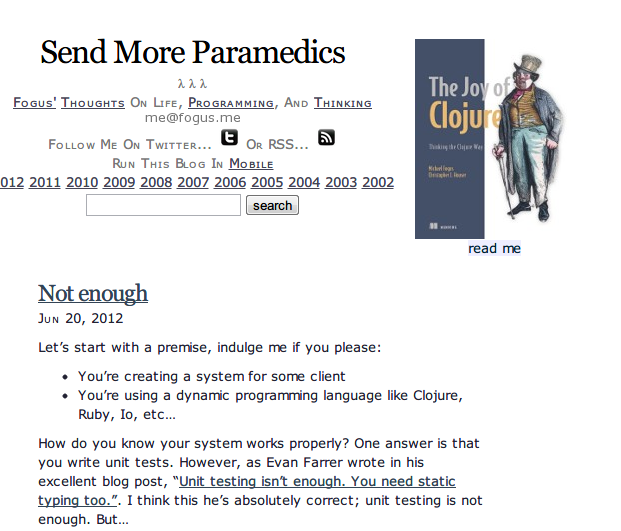
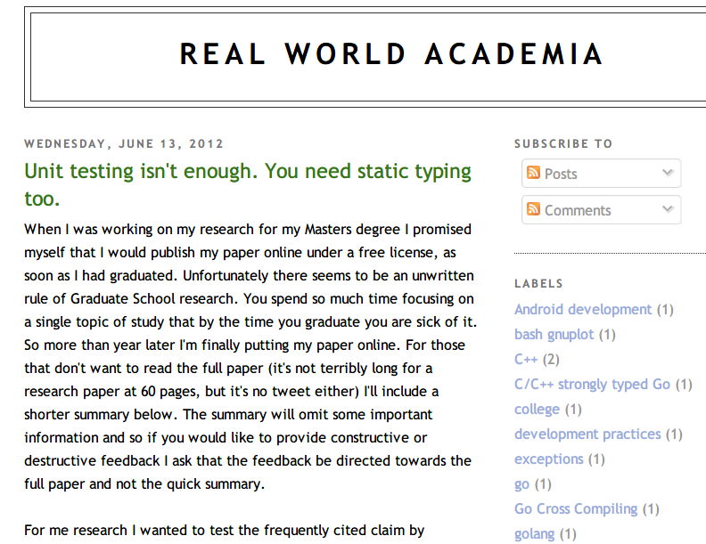
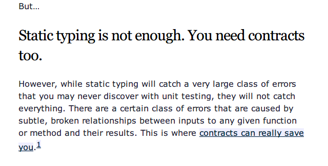
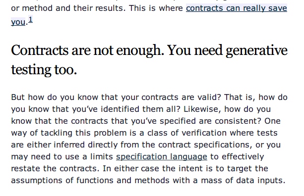
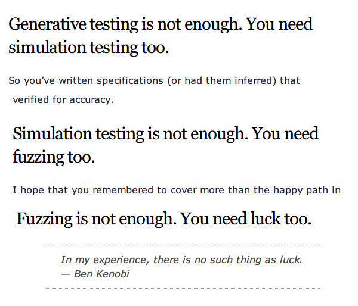
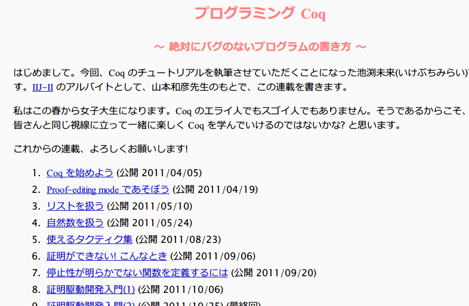

たのしいHaskellのツールチェインとC++
PFIセミナー 2012/07/19
PFIセミナー 2012/07/19
田中英行, @tanakh, http://tanakh.jp
PFIで働くプログラマ
Haskell愛好家
拙訳「すごいHaskellたのしく学ぼう! 」発売中
ソフトウェアテストを取り巻く環境
C/C++のコードをQuickCheckする
C/C++のコードをCriterionでパフォーマンス測定する





（オチがそれかよ…）

定理証明 ⇒ Fully Dependent Typedなプログラミング言語でプログラムを書く
実は、ある型のプログラムを書くことは、ある命題の証明と対応する！

定理証明の付いたコードを書くのは大変
そもそもむずい
コードがでかくなる
（こんなことを書きつつ、私はあまり詳しくないです…すみません）
コードの正しさを保証することと、そのコストはトレードオフ
何をやって何をやらざるかは単に開発コストの問題
スイートスポットを攻めるべき
ユニットテスト
静的型付け
証明
Generative Test
ぜひ Generative Test をやりましょう！
利用できる言語が限られる
| ＼ __ ／ ＿ （ｍ） ＿ﾋﾟｺｰﾝ |ミ| ／ ｀´ ＼ (´･_･`) HaskellのQuickCheckでC++コードを ノヽノヽ テストすればいいじゃまいか！？ くく
http://www.cse.chalmers.se/~rjmh/QuickCheck/
Haskell Platform をインストール
テストを含む cabal プロジェクトを作る
テストを書く
テストを実行
繰り返し
ダウンロードして、マウスをホチポチすれば入る（Linux以外）
> cabal init とタイプして、適当に質問に答える
PS C:\Users\tanakh\Dropbox\project\tmp\qc-test> cabal init
Package name? [default: qc-test]
Package version? [default: 0.1.0.0]
Please choose a license:
* 1) (none)
2) GPL-2
3) GPL-3
...
What does the package build:
1) Library
2) Executable
Your choice? 2
Include documentation on what each field means (y/n)? [default: n]
Guessing dependencies...
...
Generating qc-test.cabal...<プロジェクト名>.cabal というファイルが生成されたはずなので、それを編集
name: qc-test
version: 0.1.0.0
-- synopsis:
-- description:
license: BSD3
（略…）
executable qc-test
main-is: main.hs
build-depends: base ==4.5.*
-- ↓これを追加
test-suite hoge-test
type: exitcode-stdio-1.0
main-is: test.hs
build-depends: base ==4.5.*
, hspec >=1.3mySum :: [Int] -> Int
mySum [x] = x
mySum (x:xs) = x + mySum xsimport Test.Hspec
main :: IO ()
main = hspec $ do
describe "sum function" $ do
it "is correct" $ do
mySum [1, 2, 3] `shouldBe` 6
mySum [1 .. 10] `shouldBe` 55思いつくままにテストケースを書きます
> cabal build
Building qc-test-0.1.0.0...
Preprocessing executable 'qc-test' for qc-test-0.1.0.0...
[1 of 1] Compiling Main ( main.hs, dist\build\qc-test\qc-test-tmp\Main.o )
Linking dist\build\qc-test\qc-test.exe ...
Preprocessing test suite 'hoge-test' for qc-test-0.1.0.0...
[1 of 1] Compiling Main ( test.hs, dist\build\hoge-test\hoge-test-tmp\Main.o )
Linking dist\build\hoge-test\hoge-test.exe ...
> cabal test
Running 1 test suites...
Test suite hoge-test: RUNNING...
Test suite hoge-test: PASS
Test suite logged to: dist\test\qc-test-0.1.0.0-hoge-test.log
1 of 1 test suites (1 of 1 test cases) passed.パスしたようですね！
QuickCheckのテストケースは関数（プロパティという）
Int のリスト） を受け取り、Bool を返す関数True が帰ればパスprop_mySum :: [Int] -> Bool
prop_mySum xs =
mySum xs == sum xs -- sum は標準のリストの総和を求める関数簡単でしょう？
import Test.Hspec
import Test.Hspec.HUnit
import Test.Hspec.QuickCheck -- これを追加
-- (略)
main :: IO ()
main = hspec $ do
describe "sum function" $ do
it "is correct" $ do
mySum [1, 2, 3] `shouldBe` 6
mySum [1 .. 10] `shouldBe` 55
prop "is equivalent to sum" $ -- これを
prop_mySum -- 追加import Test.Hspec
import Test.Hspec.HUnit
import Test.Hspec.QuickCheck
-- (略)
main :: IO ()
main = hspec $ do
describe "sum function" $ do
it "is correct" $ do
mySum [1, 2, 3] `shouldBe` 6
mySum [1 .. 10] `shouldBe` 55
prop "is equivalent to sum" $ \xs ->
mySym xs == sum xs> cabal build && cabal test
Running 1 test suites...
Test suite hoge-test: RUNNING...
sum function
- is correct
- is equivalent to sum FAILED [1]
1) sum function is equivalent to sum FAILED
*** Failed! Exception: 'test.hs:(6,1)-(7,27): Non-exhaustive patterns in function mySum' (after 1 test):
[]
...
0 of 1 test suites (0 of 1 test cases) passed.おや(棒)、テストがコケたみたいですね
- is equivalent to sum FAILED [1]> 1) sum function is equivalent to sum FAILED
> *** Failed! Exception: 'test.hs:(6,1)-(7,27): Non-exhaustive patterns in function mySum' (after 1 test):
> []どうやら、空のリストの時にエラーになっているようです
mySum :: [Int] -> Int
mySum [x] = x ← あっ(´･_･`)
mySum (x:xs) = x + mySum xsmySum [] = 0
mySum (x:xs) = x + mySum xs直して、再実行
> cabal test
Running 1 test suites...
Test suite hoge-test: RUNNING...
Test suite hoge-test: PASS
Test suite logged to: dist\test\qc-test-0.1.0.0-hoge-test.log
1 of 1 test suites (1 of 1 test cases) passed.ふう、事なきを得ました。
C++のコードをQuickCheckする
HaskellからC++のコードを呼び出せば良い
int add(int x, int y)
{
return x * y; // わざと間違えてます！！
}test-suite hoge-test
type: exitcode-stdio-1.0
main-is: test.hs
build-depends: base ==4.5.*
, hspec
, QuickCheck
-- ↓ C++ファイルを c-sources に列挙して外部ライブラリにstdc++を追加
c-sources: hoge.cpp
extra-libraries: stdc++foreign import ccall で cdecl 呼び出し規約の関数を呼び出せる
{-# LANGUAGE ForeignFunctionInterface #-}
import Test.Hspec
import Test.Hspec.HUnit
import Test.Hspec.QuickCheck
import Test.QuickCheck
import Test.QuickCheck.Property
main :: IO ()
main = hspec $ do
describe "add function" $ do
prop "it corrects" $ \x y -> do
morallyDubiousIOProperty $ do -- テスト中でIOをやるための関数
z <- add x y
return $ z == x + y
foreign import ccall add :: Int -> Int -> IO Int> cabal test
Running 1 test suites...
Test suite hoge-test: RUNNING...
add function
- it corrects FAILED [1]
1) add function it corrects FAILED
*** Failed! Falsifiable (after 1 test and 2 shrinks):
0
1
Finished in 0.0120 seconds, used 0.0156 seconds of CPU time
1 example, 1 failure
Test suite hoge-test: FAIL
Test suite logged to: dist\test\qc-test-0.1.0.0-hoge-test.log
0 of 1 test suites (0 of 1 test cases) passed.#include <vector>
using namespace std;
int vsum(const vector<int> &v) {
int ret = 0;
for (size_t i = 0; i < v.size(); ++i)
ret += v[i];
return ret;
}これをテストしたいが、Haskellのデータ構造とのマーシャリングが面倒なので、 ラッパ関数を書く
extern "C" int c_vsum(int *p, int n) {
return vsum(vector<int>(p, p+n));
}{-# LANGUAGE ForeignFunctionInterface #-}
import Test.Hspec
import Test.Hspec.HUnit
import Test.Hspec.QuickCheck
import Test.QuickCheck
import Test.QuickCheck.Property
import Foreign
import Foreign.C
main :: IO ()
main = hspec $ do
describe "add function" $ do
prop "it corrects" $ \xs -> do
morallyDubiousIOProperty $ do
withArrayLen (map fromIntegral xs) $ \len ptr -> do
ret <- c_vsum ptr (fromIntegral len)
return $ fromIntegral ret == (sum xs :: Int)
foreign import ccall c_vsum :: Ptr CInt -> CInt -> IO CInt> cabal test
Running 1 test suites...
Test suite hoge-test: RUNNING...
Test suite hoge-test: FAIL
Test suite logged to: dist\test\qc-test-0.1.0.0-hoge-test.log
0 of 1 test suites (0 of 1 test cases) passed.C++のテストがQuickCheckできました(´^_^`)!
Haskellのベンチマークフレームワーク
時間計測のオーバーヘッドの計測と除去
多数回の繰り返しとブートストラップ法による統計データ計算
短い実行時間のプログラムを正確に計測できる
かっこいいレポートページが出る！
C++でも使いたい！
とりあえず適当にソートプログラム書いてみた
#include <vector>
#include <algorithm>
using namespace std;
extern "C"
void vsort(int *p, int n)
{
vector v(p, p+n);
sort(v.begin(), v.end());
}benchmark hoge-bench
type: exitcode-stdio-1.0
main-is: bench.hs
build-depends: base ==4.5.*
, criterion
, random
c-sources: hoge.cpp
extra-libraries: stdc++{-# LANGUAGE ForeignFunctionInterface #-}
import Control.Monad
import Data.List
import Foreign
import Foreign.C
import System.Random
import Criterion.Main
main = do
let len = 1000
xs <- replicateM len $ randomRIO (0, 1000)
defaultMain
[ bgroup "sort"
[ bench "c++" $ whnfIO $ withArrayLen (map fromIntegral xs) $ \len ptr ->
vsort ptr (fromIntegral len)
, bench "haskell" $ nf sort (xs :: [Int])
]
]
foreign import ccall vsort :: Ptr CInt -> CInt -> IO ()> cabal bench
Running 1 benchmarks...
Benchmark hoge-bench: RUNNING...
warming up
estimating clock resolution...
...
benchmarking sort/c++
mean: 54.11847 us, lb 53.89714 us, ub 54.40775 us, ci 0.950
std dev: 1.288492 us, lb 1.016472 us, ub 1.923825 us, ci 0.950
found 5 outliers among 100 samples (5.0%)
4 (4.0%) high mild
1 (1.0%) high severe
variance introduced by outliers: 17.107%
variance is moderately inflated by outliers
benchmarking sort/haskell
mean: 363.3632 us, lb 361.8362 us, ub 365.6127 us, ci 0.950
std dev: 9.413442 us, lb 7.040128 us, ub 14.36999 us, ci 0.950
found 4 outliers among 100 samples (4.0%)
3 (3.0%) high mild
1 (1.0%) high severe
variance introduced by outliers: 19.973%
variance is moderately inflated by outliers
Benchmark hoge-bench: FINISHQuickCheckでC++でもハッピープロパティテストライフを
ベンチも取れるよ
Haskellのツールチェインたのしい